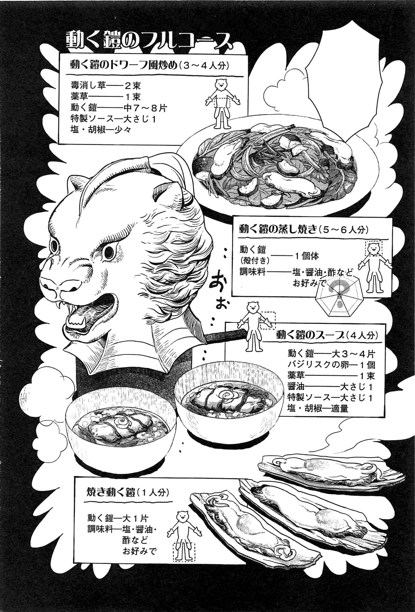
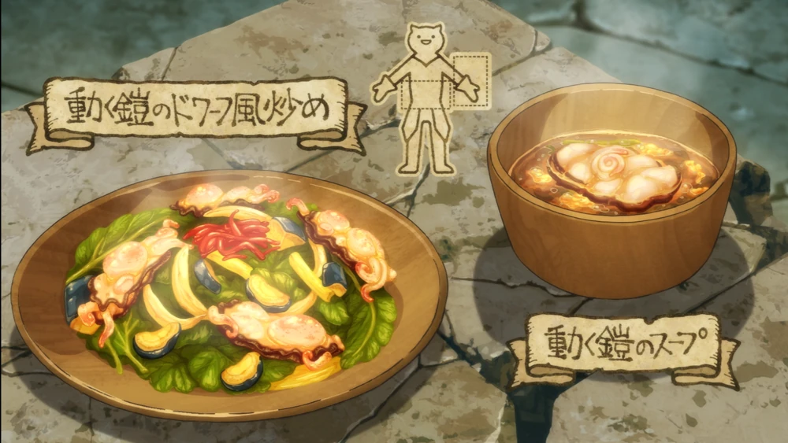

LIVING ARMOR FULL COURSE MEAL

Description
A set of dishes using one set of Living Armor prepared four different ways - stir-fried, steamed, in a soup and grilled. Eating the parts in the helmet is not recommended as they taste musty
Dishes
Living Armor Dwarf-Style Stir-Fry + Living Armor Soup

Ingredients
- Antidotal herb (2 bunches)
- Medicinal herb (1 bunch)
- Living Armor (7-8 med. pieces)
- Special sauce (1 tbsp)
- Salt and pepper (a little)
- Living Armor (3-4 large pieces)
- Basilisk egg (1)
- Medicinal herb (1 bunch)
- Soy sauce (1 tbsp)
- Special sauce (1 tbsp)
- Salt and pepper (to taste)
Steamed Living Armor
Ingredients
- Living Armor (1, whole in shell)
- Seasonings (salt, soy sauce, vinegar etc. to taste)
Grilled Living Armor
Ingredients
- Living Armor (1 large piece)
- Seasonings (salt, soy sauce, vinegar etc. to taste)